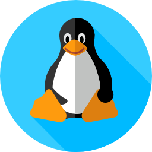

Descargar
Gratis, sin cuenta y sin trucos de instalador. Elige tu plataforma:
Última versión
Windows instalador
Lo recomendable para casi todo el mundo. SmartScreen de Windows puede avisarte porque la app aún no está firmada; elige Más información → Ejecutar de todas formas.
Descargar .exeWindows portable
Sin instalar nada. Descomprime el zip donde quieras y ejecuta sims_mod_manager.exe.
Descargar .zip
macOS
Firmada y notarizada por Apple. Descomprime y arrástrala a Aplicaciones; luego se abre como cualquier otra app.
Descargar .zip
Linux
Descomprime el archivo y ejecuta sims_mod_manager. También funciona con juegos instalados con Wine/CrossOver.
Descargar .tar.gzCada versión se compila automáticamente para las tres plataformas, y la app te avisa cuando hay una actualización.